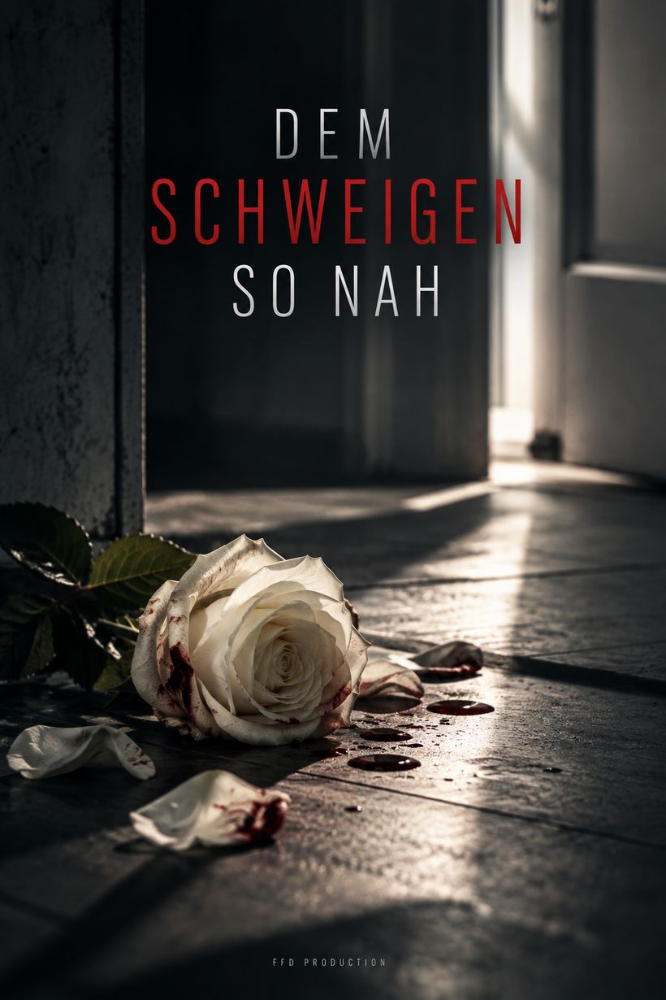

Dem Schweigen so nah
In Vorproduktion
Als eine Polizistin ins Haus eines langjährigen Familienfreundes gerufen wird, glaubt sie an dessen Ehefrau Spuren von Misshandlung zu sehen. Kann sie ihrem Instinkt trauen oder steigert sie sich rein, weil sie an das familiäre Trauma erinnert wird, dem sie selbst schon einmal entkommen musste?
Handlung lesen
An Jörgs (48) Geburtstagsfeier gehören sein Kripo-Kollege Thomas (42) und dessen Schwester Steffi (45) zu den letzten Gästen. Sie feiern auch das Ende einer langen Ermittlung, bei der Jörg Thomas das Leben rettete. Seine Ehefrau Renée (45) ist ebenfalls anwesend, die beiden wirken wie ein harmonisches Paar, das sich kleine liebevolle Gesten schenkt. Auch das Verhältnis zwischen den Geschwistern ist sehr nahe, näher als die meisten sich stehen. Der Abend klingt entspannt aus, doch am nächsten Tag werden Steffi und ihr Kollege (31) zu einem abgebrochenen Notruf beordert. Die Adresse ist nicht unbekannt.
Jörg öffnet die Haustür, überrascht und mit Blutspuren an der Hand. Renée sei die Treppe hinuntergestürzt und habe sich im Schock verwählt. Er habe bereits den Rettungsdienst gerufen. Obwohl Steffi Jörg als liebevollen und loyalen Menschen kennt, rät ihr ihr Instinkt genauer hinzusehen. Sie besteht darauf, Renée zu sehen, und ist geschockt von ihrem Anblick: Kratzer im Gesicht, eine aufgeplatzte Lippe, Würgemale am Hals – wie ein Treppensturz sieht das nicht aus. Doch Renée verteidigt verbissen ihren Mann. Auch Jörgs Fassade bröckelt nicht. Er zeigt sich weiterhin als besorgter Ehemann, der Steffi das Misstrauen nicht übelnimmt.
Am Abend sucht Steffi bei Thomas Halt und Rat. Doch statt Verständnis erntet sie zunächst Widerstand. Ihr Bruder arbeitet seit Jahren Seite an Seite mit Jörg. Er verdankt ihm sein Leben und kann sich das Bild eines gewalttätigen Ehemanns nicht vorstellen. Doch auch Thomas weiß, wie das ist, wenn das eigene Haus eine Parallelwelt ist, deren Geschehnisse eisern geheim gehalten werden. Die Geschwister suchen Halt beieinander wie damals, und gleichzeitig fürchtet sich Steffi vor dem, wozu Thomas in der Lage ist.
Finanzierungsziel 7.500 €
- Gagen
- Technik
- Drehort und Ausstattung
- Postproduktion
- Festivaleinreichungen
- Barrierefreie Fassung
116 016 Hilfetelefon „Gewalt gegen Frauen“: rund um die Uhr, kostenfrei, anonym.